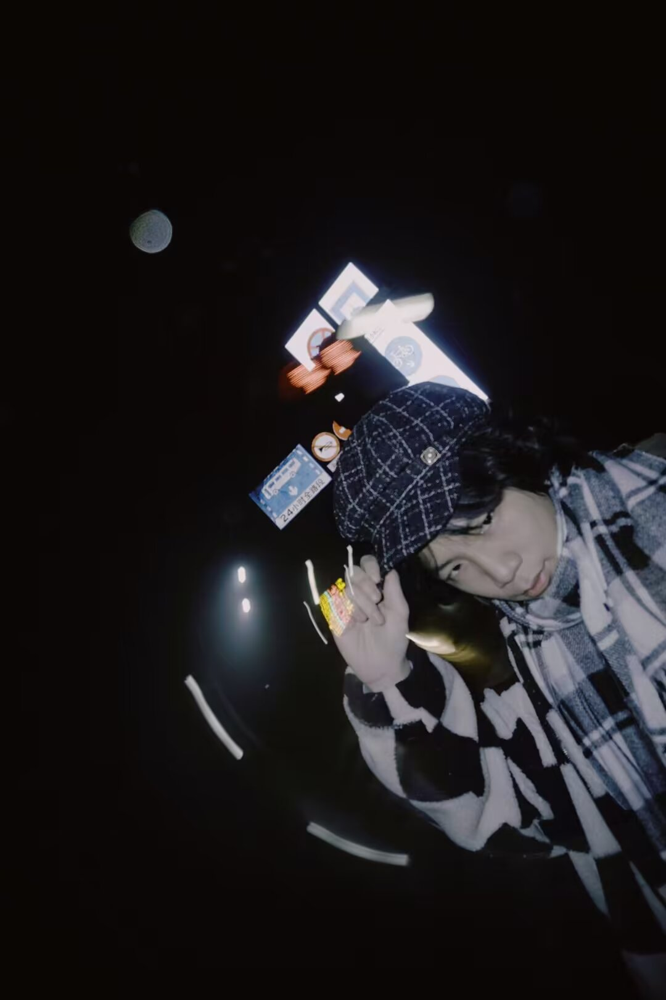

上海温哥华电影学院 · 英国创意艺术大学
关于我
我是一名热爱电影与叙事的创作者，擅长使用 Adobe 系列软件进行后期制作，对镜头语言、色彩与剪辑节奏有敏锐把握。我积极探索 AI 和各种新的影视工具在电影创作中的应用，以提升作品的深度与创新性。
技能
Adobe Premiere Pro · After Effects · DaVinci Resolve · Midjourney · ChatGPT · Character AI
中英文剧本写作 · 分镜设计 · 电影摄影指导 · 剪辑调色 · Directing
关于更多
我的电影创作之旅始于高中时期，源于我对历史与军事题材的浓厚兴趣。我从一部独立战争主题短片起步，由此踏入了电影摄影、剪辑与视觉特效的领域。这段早期经历，奠定了我对电影制作这门专业的热爱。之后，我先后在上海温哥华电影学院与创意艺术大学接受专业训练，期间创作了多部短片作品，涵盖纪录片、人文叙事片、黑色喜剧以及软科幻等多种类型。我精通Adobe系列软件及后期制作流程，对视觉语言与剪辑节奏有着扎实的把控能力，同时也会在创作过程中融入人工智能工具，以此丰富叙事表达、深化创作构思。
联系与合作
欢迎项目合作、短片拍摄、后期制作与创意咨询。